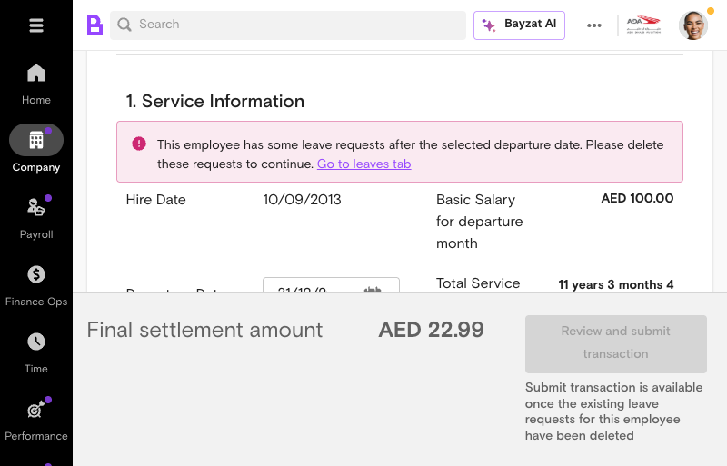
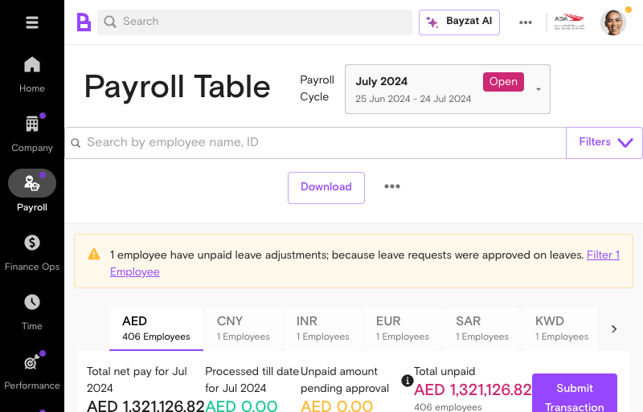
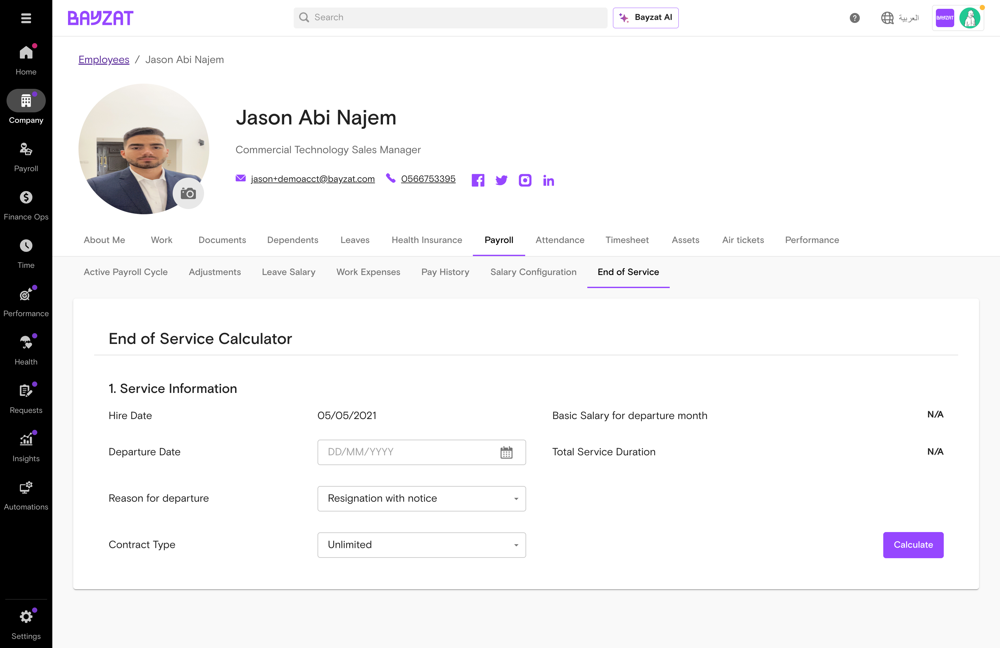
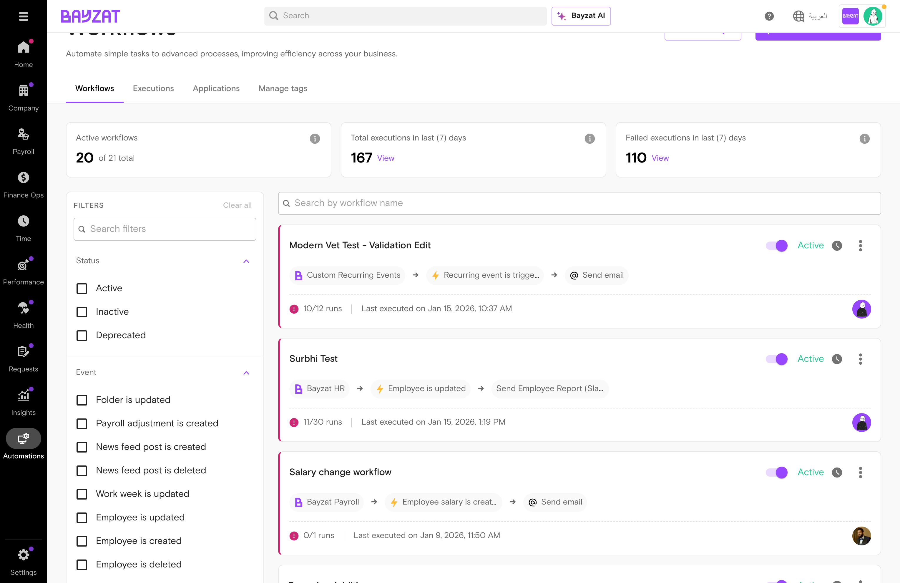

Calculate and settle final payments for departing employees in compliance with UAE labor law
What is End of Service?
End of Service Calculator - The main interface for processing employee departures and final settlements

EOS Calculation Example - Complete settlement calculation showing service duration, gratuity, and final amount breakdown
Feature Description
End of Service is a feature that calculates and settles the final payment for employees when they leave the company, including gratuity, leave encashments, and other financial components according to UAE labor law. This feature ensures accurate, compliant calculations for all employee departures, whether due to resignation, termination, or contract completion.
Who Uses This Feature?
User Role
What They Do
Value Proposition
HR Administrators
Initiate and manage employee departures, coordinate offboarding processes, and ensure proper documentation
Process employee exits with confidence knowing all legal entitlements are calculated correctly—eliminating compliance risks and potential labor disputes
Payroll Managers
Calculate final settlements including gratuity, leave encashments, and deductions
Generate accurate, UAE labor law-compliant settlements in minutes—rather than spending hours on manual calculations and cross-referencing regulations
Finance Teams
Review settlement amounts and process final payments to departing employees
Receive fully itemized, audit-ready settlement breakdowns—without back-and-forth verification with HR or manual reconciliation
Departing Employees
Receive transparent breakdown of their final settlement and entitlements
Understand exactly how your final payment was calculated—building trust through transparency and reducing disputes at separation
Key Benefits
Automated calculation of gratuity based on UAE labor law requirements
Accurate leave encashment calculations integrated with time-off data
Comprehensive settlement breakdown including additions and deductions
Compliance with MOHRE regulations for all departure scenarios
Printable settlement documents for employee records
Support for both limited and unlimited contract types
Product Foundation Overview
Business Problem Solved
Manual calculation of employee end-of-service payments is complex, error-prone, and time-consuming. Organizations must account for multiple components (gratuity, leave encashments, monthly pay) while ensuring compliance with UAE labor law. The End of Service feature automates this process, eliminating calculation errors and ensuring legal compliance.
Key Benefits & Impact
Regulatory Compliance
Calculations follow UAE labor law requirements, including gratuity formulas based on years of service and basic salary, with a maximum cap of two years' basic salary.
Operational Efficiency
Automates complex multi-component calculations, reducing processing time and manual effort. Generate gratuity liability reports for all employees in seconds.
Financial Accuracy
Eliminates calculation errors through systematic processing of gratuity, leave encashments, and deductions. Provides detailed breakdowns for audit and employee verification.
How It Works (Brief Overview)
The process involves selecting an employee, entering their departure date and reason, choosing their contract type, and then the system calculates the End of Service amount. Users can review additions, add or edit deductions, and submit the final transaction. The system pulls employee data from the payroll table and integrates with time-off records to ensure all components are accurate.
Core Concepts
Concept
Description
Impact on Calculation
Gratuity
End-of-service benefit calculated based on years of continuous service and basic salary, with different formulas for service periods under and over 5 years.
Primary component of final settlement; requires minimum 1 year of service
Leave Encashment
Payment for unused leave days at the time of departure
Calculated based on leave policy and accrued leave balance
Contract Type
Either Unlimited or Limited contract, which affects gratuity calculation and settlement terms.
Determines applicable gratuity formula and eligibility rules
Departure Reason
Categorized as Termination, Resignation, or End of Contract.
May affect gratuity eligibility and calculation method
Related Features
Finance module and Payroll table for employee data and transaction processing
Employee Profile for accessing personnel and contract information
Time-off management for leave encashment calculations
Payroll settings for configuring leave policies and gratuity rules
Prerequisites & Requirements
Requirement
Details
Status
User Role
HR Administrator or Payroll Manager access level
Required
Employee Data
Complete employee profile with contract details and salary information
Required
Leave Policy Configuration
Leave policies must be configured in Payroll settings
Required
Gratuity Settings
Gratuity calculation rules configured according to company policy
Required
Payroll Data
Current payroll information and salary records available in system
Required
Complete User Journey Guide
Journey Overview
The End of Service process follows a structured workflow from employee selection through final settlement. This journey ensures all required information is captured and calculations are accurate before submission.
1
Navigate to Payroll
Access the Finance module and locate the Payroll table to begin the End of Service process.
2
Select Employee
Choose the departing employee from the payroll table and navigate to their employee profile.
3
Enter Departure Details
Select the departure date, choose the departure reason (Termination, Resignation, or End of Contract), and specify the contract type (Unlimited or Limited).
4
Review Calculations
The system calculates the End of Service amount, displaying gratuity, leave encashments, and monthly pay components.
5
Manage Additions & Deductions
Review additions, add or edit deductions as needed, and include reference numbers and notes for documentation.
6
Finalize & Submit
Review the total settlement amount and submit the transaction. A final settlement document can be printed for records.
Success Indicators
All required departure details are entered correctly
Calculated gratuity amount matches UAE labor law requirements
Leave encashment reflects accurate accrued leave balance
All additions and deductions are documented with references
Final settlement amount is reviewed and approved
Transaction is successfully submitted and recorded
Settlement document is generated and available for printing
Feature Discovery
How to Access
The End of Service feature is accessed by navigating to Finance > Payroll table, selecting an employee, and then clicking the End of Service tab within the employee profile.
Navigation Path
From the main Bayzat dashboard, click on Finance in the left navigation menu
Select Payroll from the Finance submenu
Locate and click on the employee name in the Payroll table
In the employee profile, click on the Payroll tab
Click on the End of Service tab to access the calculator

Navigation to Payroll Table - Shows Finance menu access and Payroll table overview with employee recordsPayroll Table Overview - Download options, filters, and employee listing with currency tabs
Interface Overview
The End of Service calculator interface contains several key sections:
Service Information
Displays the employee's hiring date (read-only field) and calculates total service duration based on the departure date entered. The total service duration is displayed as gross service duration, with unpaid leave deductions shown as a separate line item.
Departure Details
Input fields for departure date, reason for departure (Termination, Resignation, End of Contract), and contract type selection (Unlimited or Limited).
Calculation Results
Displays calculated gratuity, leave encashments, monthly pay, and total End of Service amount with breakdown of additions and deductions. The gratuity amount is editable, allowing manual adjustments when necessary.
EOS Tab Visibility Rules
The End of Service tab is visible and accessible for active employees in the Payroll section. Once an employee is offboarded, the EOS tab becomes disabled or hidden, preventing further modifications to the settlement.
Gratuity File Downloads
Gratuity reports can be downloaded from the Payroll table menu. Downloaded files display clear month identification with the full month name and year format (e.g., "March 2024") to ensure consistency and clarity in financial reporting.
End of Service Calculator Interface - Shows departure date picker, reason for departure dropdown, contract type selection, and service information section with hiring date
Setup Process
Initial Configuration
Before processing End of Service calculations, ensure the following are configured in your Bayzat system:
Leave policy settings for leave encashment calculations
Employee contract types (Unlimited or Limited) are correctly assigned
Payroll currency is set to AED for gratuity-eligible employees
Basic salary is accurately recorded in the Active Payroll record
Leave Encashment Settings Configuration
Leave encashment calculations can be configured to use different daily wage calculation methods. Navigate to Settings → Payroll → Leave encashment policy to select the calculation basis (e.g., "Basic / Working days"). This setting is reflected in the End of Service Eligibility section and affects how leave encashment amounts are calculated for departing employees.
Leave Encashment Policy Settings - Configure calculation method for leave encashment in End of Service settlements
End of Service Eligibility Configuration
Configure how different leave types are calculated for End of Service settlements by navigating to Settings → Payroll settings → End of service eligibility. The eligibility section displays the daily rate calculation method per leave type, such as "Basic salary + allowances / Custom days" or "Basic salary + allowances / Calendar days".
EOS Eligibility Settings - Configure daily rate calculation methods for each leave type used in End of Service calculations
Unpaid Leave Configuration
Leave policies can be configured to exclude unpaid leave from service duration calculations. This setting affects the total service duration used for gratuity calculation, with unpaid leave days automatically deducted from the gross service period.
Step-by-Step Setup
1
Navigate to Employee Profile
Go to Finance > Payroll table and select the employee for whom you want to calculate End of Service. The employee profile will open in a detailed view.
2
Access End of Service Tab
In the employee profile, locate the Payroll tab and click on the End of Service sub-tab. The End of Service tab is visible and clickable in the Payroll section of employee profiles.
Accessing End of Service Calculator - Shows the EOS tab location and initial calculator interface
3
Enter Departure Date
Select the departure date (last working day or contract end date) using the date picker. This date is critical as it determines service duration and affects gratuity and leave encashment calculations.
Note: Variable pay and work expenses may not be predictable for future departure dates and will not be displayed in the calculation.
4
Select Departure Reason
Choose the reason for departure from the dropdown menu: Termination, Resignation, or End of Contract. The selection may affect gratuity eligibility and calculation methodology.
5
Select Contract Type
Choose the contract type from the dropdown: Unlimited or Limited. The contract type affects how gratuity is calculated according to UAE labor law.
6
Calculate End of Service Amount
Click the Calculate button to process the End of Service calculation. The system will compute gratuity, leave encashments, and other financial components based on the inputs provided.
Important:Non-AED employees receive zero gratuity per UAE labor law (not KSA or other GCC country rules). If an employee is not based in the UAE or their payroll currency is not AED, the system will display an alert indicating no gratuity is owed. The employee's payroll currency persists during the offboarding process to ensure consistency.
Payroll Period Requirement: Submitting the final End of Service transaction is only available once the current payroll period is closed. For example, if the departure date falls within November 2025 payroll (1 November – 30 November 2025), you must wait until the November payroll cycle is closed before submitting the transaction.
7
Review Calculated Components
Review the breakdown of gratuity, leave encashments, and monthly pay components. The calculator displays:
Total Service Duration (calculated from hiring date to departure date) - Shown as gross service duration with unpaid leave deductions listed separately
Gratuity amount (based on service duration and basic salary) - The gratuity field is editable, allowing manual adjustments with a breakdown dialog showing the calculation methodology
Leave encashment (unused leave days converted to monetary value) - Calculated using the daily wage formula: (basic salary + allowances) / 30, displayed with precise decimal accuracy
Monthly pay components - Pro-rated amounts displayed with consistent decimal precision to avoid rounding errors
Settlement breakdown includes all components: gratuity, pro-rated salary, leave encashment, work expenses, and any previous payment deductions

EOS Calculator Interface - All input fields for departure date, reason, contract type, and service informationEOS Calculation Results - Complete settlement breakdown with gratuity, monthly pay, and total amountGratuity Breakdown Dialog - Detailed calculation formula and editable gratuity field for manual adjustments
8
Add Optional Additions
Review and add any optional additions to the settlement amount. These may include bonuses, incentives, or other payments due to the employee.
9
Add or Edit Deductions
Add or modify deductions from the settlement amount. You can add one-off deductions or select recurring deductions. Include reference numbers and notes for audit purposes.
10
Review and Submit Transaction
Review the total settlement amount and submit the transaction. Once submitted, the End of Service calculation is recorded and a final settlement document is generated.
Verification Steps
Confirm that the hiring date displays correctly in the Service Information section
Verify that the total service duration is calculated accurately
Check that gratuity amount reflects the correct formula based on service duration
Ensure leave encashment calculation includes all unused leave days
Review all additions and deductions are correctly entered
Confirm the final settlement amount is accurate before submission
Feature Usage
Common Workflows
Processing Employee Resignation
When an employee resigns, navigate to their profile, select "Resignation" as the departure reason, enter the last working day, and calculate the final settlement including gratuity and leave encashment.
Handling Contract Expiration
For limited contract employees whose contracts are ending, select "End of Contract" as the reason, enter the contract end date, and process the settlement calculation.
Processing Termination
When terminating an employee, select "Termination" as the departure reason, enter the effective termination date, and calculate the final settlement with all applicable components.
Usage Examples
Example 1: Calculating Gratuity for a 6-Year Employee
An employee with 6 years of service and a basic salary of AED 5,000 is resigning. For service over 5 years, the gratuity is calculated using a mixed formula: 21 days' basic salary for the first 5 years plus 30 days' basic salary for each additional year, with a maximum cap of two years' basic salary. The system automatically applies the correct formula based on the departure date entered.
Example 2: Leave Encashment Calculation
An employee has 15 unused leave days at departure. The system calculates the monetary value of these days using the configured leave proration method. The leave days calculation display shows how many days are eligible for encashment based on the selected calculation method. The calculation uses the daily wage formula: (basic salary + allowances) / 30 and adds this to the End of Service settlement.
Example 3: Amount Consistency Across System
End of Service amounts are consistent across all system views. The gratuity and settlement amounts shown in the EOS tab match exactly with what appears in the transaction page and the payroll table, ensuring data integrity throughout the offboarding process.
Reports and Export Options
Gratuity Reports with Date Range Selection
Gratuity reports support date range selection, allowing you to generate reports for specific time periods. The interface provides a date range selector for custom start and end dates, as well as a monthly granularity option to generate monthly gratuity liability reports instead of annual summaries.
Custom Report Builder Integration
The Gratuity field is available in the custom payroll report builder, allowing you to create customized reports that include End of Service data. Note that gratuity values only populate in custom reports for employees who have completed EOS processing.
Accrual Reports
Historical accrual reports are accessible for all closed payroll cycles. The accrual report interface displays a payroll cycle selector showing all available closed periods, not just the most recent one. This allows you to track gratuity liability over time.
Accrual report column headers clearly distinguish between "Accrual up to previous payroll cycle close" and "Total accrual amount at end of payroll cycle". Tooltips are available on column headers to explain the timing and meaning of accrual calculations.
Accrual balances maintain continuity from month to month, with each report showing how the balance carries forward from the previous closed period. New hires are handled appropriately in accrual reports based on their hire date and eligibility.
Report Field Options
Gratuity reports include additional field options such as "Days of Service" and filters for GCC nationality, allowing you to segment and analyze your gratuity liability by different employee attributes.
Understanding Gratuity Calculations
The system provides calculation transparency through help text and expandable breakdown dialogs that explain the gratuity methodology. Key calculation formulas:
Service Duration Calculation
Total Service Duration = Gross Service Duration - Unpaid Leave Days
The system displays both the gross service duration (from hire date to departure date) and separately lists any unpaid leave deductions to show the net service period used for gratuity calculation.
Daily Wage Calculation
Daily Wage = (Basic Salary + Allowances) / 30
This formula is used for calculating both gratuity and leave encashment. The calculation breakdown shows this formula to ensure transparency in how amounts are derived.
Gratuity Formula (Service < 5 Years)
Gratuity = (Basic Salary ÷ 30) × 21 × Years of Service
For employees with less than 5 years of continuous service, 21 days of basic salary per year of service.
For employees with 5 or more years of service: 21 days per year for the first 5 years + 30 days per year for each additional year. Maximum cap: 2 years of basic salary.
Pro-rated Monthly Pay
Pro-rated Pay = (Basic Salary + Allowances) / Days in Month × Days Worked
Monthly pay components are pro-rated based on the number of days worked in the departure month, with consistent decimal precision to avoid rounding errors.
Best Practices
Always verify the hiring date is correct before calculating End of Service. Note that the hiring date field is locked once payroll transactions exist
Double-check the departure date to ensure accurate service duration calculation
Review gratuity calculations carefully, especially for employees with over 5 years of service. Use the gratuity breakdown dialog to verify the calculation methodology
Ensure all leave balances are finalized before processing End of Service. Verify that the leave calculation method is configured correctly for your organization
Document any additions or deductions with clear reference numbers and notes
Review the final settlement amount with the employee before submission when possible. Verify that amounts match across the EOS tab, transaction page, and payroll table
Keep printed settlement documents for compliance and audit purposes. Downloaded gratuity files include clear month identification for proper record-keeping
For employees outside the UAE, confirm that the system correctly shows zero gratuity per UAE law. Currency settings persist during offboarding to ensure consistency
Wait until the payroll period is closed before attempting to submit the final EOS transaction
Workflow Integration
How Workflows Connect to End of Service
The Bayzat HR application provides workflow triggers that can automate tasks related to employee offboarding and End of Service processing. These triggers allow you to build custom automation workflows that execute when employees are offboarded.
Access: Automations (left sidebar) → Workflows

Workflows Page - Access workflow automation through the Automations menu in the left sidebar
Available Triggers
The following workflow triggers are available for End of Service automation:
Create task lists for IT equipment return, notify relevant departments, initiate access revocation
EOS Workflow Triggers - The "Employee is offboarded" trigger is available for creating custom offboarding workflows
Available Actions
When creating workflows with EOS triggers, you can use the following actions:
Send email - Notify managers, HR, or the departing employee about settlement status
Create task - Automatically create tasks for equipment collection, exit interviews, or documentation
Send mobile notification - Push notifications to relevant stakeholders
Update employee - Modify employee records as part of offboarding
Create pay adjustment request - Handle final payment adjustments automatically
Example Workflow: Offboarding Notification
Create a workflow that automatically sends email notifications when an employee is offboarded:
1
Create New Workflow
Navigate to Automations → Workflows and click "Create new workflow"
2
Select Application
Choose "Bayzat HR" as the application
3
Select Trigger
Choose "Employee is offboarded" as the event trigger
4
Add Action
Select "Send email" and configure the notification template with employee details and settlement information
5
Activate Workflow
Save and activate the workflow to start automatic notifications for all future offboardings
Current Workflow Status
Note: No pre-configured End of Service workflows exist in the system. Organizations can create custom workflows using the available triggers to automate their offboarding processes.
Best Practices for EOS Workflows
Use the "Employee offboarding process is initiated" trigger for pre-departure tasks (equipment collection, access revocation)
Use the "Employee is offboarded" trigger for post-departure tasks (final notifications, record updates)
Include relevant employee data in email templates for personalized communications
Test workflows with a small group before rolling out to the entire organization
Document all active workflows for audit and compliance purposes
Business Rules & Limitations
Core Business Rules
End of Service calculations follow specific rules based on employee contract type, departure reason, and UAE labor law requirements.
Business Rule
Details
Impact
Gratuity Eligibility
Minimum 1 year of continuous service required for gratuity eligibility
Employees with less than 1 year service receive no gratuity
Non-AED Currency Rule
Non-AED employees receive 0 gratuity per UAE law
Only AED-based employees are eligible for gratuity calculation
Gratuity Calculation Formula
Different formulas apply for service periods under 5 years versus over 5 years of service
Calculation method changes based on tenure duration
Gratuity Maximum Cap
Gratuity capped at maximum of two years' basic salary
Calculated gratuity cannot exceed two years of basic salary
Contract Type Handling
Different handling for limited and unlimited contract types
Contract type selection affects calculation methodology
Variable Pay Visibility
Variable pay and work expenses not shown for future departure dates
Unpaid leave days are excluded from service calculation. Leave policies can be configured to exclude unpaid leave from service duration, and the calculation breakdown shows the deduction separately
Service duration is reduced by any unpaid leave periods
Departure Reason Options
Valid reasons include Termination, Resignation, or End of contract
Departure reason must be selected from predefined list
Payroll Period Closure
Final EOS transaction submission is only available after the payroll period containing the departure date is closed
Prevents premature submission and ensures all payroll data is finalized before settlement
Hiring Date Lock
Hiring date field becomes read-only and locked when employee has payroll transaction history
Prevents modification of hiring date that would invalidate historical payroll calculations
EOS Tab Visibility
EOS tab is visible for active employees and disabled/hidden for offboarded employees
Prevents changes to completed settlements after employee offboarding
Calculation Transparency
Gratuity calculation methodology is accessible through help text and breakdown dialogs, with editable fields for manual adjustments
Allows users to understand and verify calculation logic
System Constraints
Variable pay and work expenses are not predictable for future months, limiting accuracy of forward-looking calculations
Gratuity calculations are based solely on basic salary, not gross salary or allowances
The system requires manual entry of departure date, reason, and contract type—these cannot be auto-populated from other modules
Leave encashment calculations depend on accurate leave balance data in the system
Historical data for past departures may not be available for recalculation or audit purposes
Compliance Requirements
All End of Service calculations must comply with UAE labor law as administered by the Ministry of Human Resources and Emiratisation (MOHRE). Key compliance points include:
Calculations must follow MOHRE-mandated formulas based on years of service and basic salary
Gratuity must be calculated and paid in AED currency per UAE labor law (not KSA or other GCC regulations)
Final settlement documents should be retained for audit and compliance verification
All deductions and additions must be documented with clear justification
Settlement amounts must be consistent across all system interfaces (EOS tab, transaction page, payroll table)
EOS Eligibility Configuration - Leave type settings and daily rate calculation methods that govern End of Service calculations
Troubleshooting & Edge Cases
Common Issues
Issue
Cause
Resolution
Gratuity amount shows as zero
Employee is non-AED currency or has less than 1 year service
Verify employee currency setting and service duration. Non-AED employees are not eligible for gratuity under UAE law.
Leave encashment not calculating
Leave balance data may be missing or inaccurate in the system
Check employee leave balances in the Time-Off module before calculating End of Service. Ensure leave policies are correctly configured.
Variable pay not appearing in calculation
Variable pay is not shown for future departure dates
If calculating for a future date, variable pay components will not be included. Use actual departure date for complete calculation.
Gratuity calculation differs from expected amount
Contract type or service duration may be incorrectly selected
Verify contract type (Unlimited vs Limited) and confirm total service duration. Review calculation formula for the applicable service period.
Cannot modify gratuity or leave amounts
Fields may be locked after initial calculation
Check if the settlement has been submitted. You may need to create a new calculation to make changes.
Deductions not saving
Deduction type or amount may be invalid
Verify deduction details are complete with reference number and notes. Ensure amount does not exceed total settlement.
Cannot submit EOS transaction
Payroll period containing departure date is not yet closed
Wait until the payroll cycle is closed. System will display message: "Submitting this transaction is available once the payroll period [dates] is closed"
Hiring date field is locked and cannot be modified
Hiring date becomes read-only when employee has existing payroll transaction history
This is by design to maintain payroll data integrity. If the hiring date is incorrect, contact support to resolve the issue before processing EOS.
EOS tab not visible or disabled
Employee may already be offboarded, or you may lack necessary permissions
Verify employee status in the system. EOS tab is automatically disabled after offboarding to prevent changes to completed settlements.
Calculation breakdown not showing details
Daily wage calculation details may not be immediately visible
Look for the breakdown dialog or expandable section showing the formula: (basic + allowances) / 30. Click the gratuity amount to view the detailed calculation breakdown.
Edge Cases
Important:Gratuity can be edited and leave encashments can be modified after initial calculation. Always review these adjustments carefully before final submission.
The following scenarios require special attention:
Leap Year Calculations:Leap years require calculation using 366 days instead of 365. Ensure the system correctly accounts for leap years in service duration calculations.
Partial Year Service: Employees with less than 12 months of service are not eligible for gratuity. The system should display zero gratuity for these cases.
Multiple Contract Changes: If an employee has had both limited and unlimited contracts, clarify which contract type applies at the time of departure.
Unpaid Leave Periods:Unpaid leave days are excluded from service calculation. Verify any unpaid leave is properly deducted from total service duration.
Recurring Deductions:The system allows ability to add one-off or recurring deductions. Ensure recurring deductions are not duplicated if the employee has already departed.
Currency Conversion: Non-AED employees will show zero gratuity. Confirm this is the intended behavior per UAE labor law before finalizing settlement.
Resolution Steps
If you encounter an issue with End of Service calculation:
1
Verify Input Data
Confirm that the employee selection, departure date, departure reason, and contract type are all correctly entered. Check that the employee's basic salary and leave balances are current.
2
Review System Alerts
Check for any warning messages or alerts displayed by the system. These often indicate why a calculation is not proceeding as expected (e.g., "Non-AED employee not eligible for gratuity").
3
Check Related Data
Verify that employee profile information, leave balances, and payroll settings are accurate. Navigate to the employee's profile and Time-Off module to confirm data consistency.
4
Recalculate
After correcting any data issues, return to the End of Service calculator and recalculate the settlement amount. Compare the new result with your expected calculation.
5
Contact Support
If the issue persists after verifying all input data, contact Bayzat support with details of the employee, departure date, and the specific discrepancy you are observing.
Support Resources
Getting Help
If you need assistance with End of Service calculations or have questions about gratuity, leave encashment, or settlement procedures, the following resources are available:
In-App Help: Look for help icons or tooltips within the End of Service calculator interface for field-level guidance
Knowledge Base: Search the Bayzat help center for articles on gratuity calculation, leave encashment, and end of service procedures
Support Team: Contact Bayzat customer support for complex scenarios or calculation discrepancies
Training Resources: Access video tutorials and webinars on payroll management and employee offboarding
Documentation Links
The following Bayzat knowledge base articles provide detailed information on End of Service features:
End of Service - Complete information guide covering the full workflow from employee selection through final settlement
How to calculate gratuity for an individual employee - Step-by-step guide for calculating gratuity for a single employee
How to calculate your total gratuity liability for all employees - Instructions for exporting gratuity liability reports
UAE Gratuity Calculation - Detailed explanation of gratuity calculation formulas and rules under UAE labor law
Contact Information
Note: For urgent issues related to employee departures or final settlements, contact Bayzat support directly. Provide the employee name, departure date, and specific issue description to expedite resolution.
Email Support: support@bayzat.com
Help Center: Visit the Bayzat knowledge base for self-service articles and FAQs
In-App Chat: Use the chat feature within the Bayzat platform to connect with support agents
Glossary of Terms
Term
Definition
Basic Salary
The fixed monthly salary component used as the basis for gratuity calculation under UAE labor law. Excludes allowances and variable pay.
Calendar Days
The total number of days in a calendar year used for service duration calculations. Standard year = 365 days; leap year = 366 days.
Contract Type
Classification of employment contract as either Unlimited (open-ended) or Limited (fixed-term). Affects gratuity calculation methodology.
Daily Rate
The daily wage calculated by dividing the monthly basic salary by 30. Used as the basis for gratuity and leave encashment calculations.
Departure Date
The last working day or final date of employment for an employee. Used to calculate total service duration and gratuity eligibility.
Departure Reason
The classification of why an employee is leaving the company. Valid options include Termination, Resignation, or End of contract.
End of Service (EOS)
The process of calculating and settling all financial obligations to an employee upon their departure from the company, including gratuity, leave encashment, and deductions.
Gratuity
A mandatory end-of-service benefit payable to employees in the UAE based on years of service and basic salary, calculated according to MOHRE labor law.
Gratuity Liability
The total amount of gratuity owed to all current employees, calculated as of a specific date. Used for financial planning and compliance reporting.
Leave Encashment
The monetary value of unused annual leave days paid to an employee upon departure, calculated at the daily rate.
MOHRE
Ministry of Human Resources and Emiratisation. The UAE government authority that establishes labor law requirements, including gratuity calculation rules.
Service Duration
The total length of continuous employment for an employee, calculated from hire date to departure date. Excludes unpaid leave periods.
Settlement Document
The final printed or digital record of an End of Service calculation showing gratuity, leave encashment, additions, deductions, and total amount due to the employee.
Unpaid Leave
Days of absence without pay that are excluded from service duration calculations for gratuity eligibility purposes.
Variable Pay
Compensation components that fluctuate month-to-month (e.g., commissions, bonuses). Not included in gratuity calculations for future departure dates.